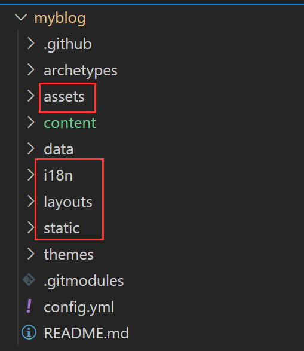

准备工作#
创建好hugo源文件仓库和github pages仓库（均不要添加readme文件）,更新一下索引和软件包
1
2
|
apt update
apt upgrade
|
下载安装hugo#
1
2
3
|
wget https://github.com/spf13/hugo/releases/download/v0.14/hugo_0.14_amd64.deb
dpkg -i hugo*.deb
hugo version
|
创建站点配置主题#
进入目录初始化git和使用模块方式管理主题
1
2
3
|
cd myblog/
git init
git submodule add https://github.com/zhroc/hugo-PaperMod.git themes/hugo-PaperMod
|
复制主题中这些文件到站点目录

新建一篇文章并预览
1
2
|
hugo new posts/blog-test.md
hugo server -D
|
添加github action#
在 .github/workflows目录下新建deploy.yml文件
填写好以下内容
1
2
3
4
5
6
7
8
9
10
11
12
13
14
15
16
17
18
19
20
21
22
23
24
25
26
27
28
29
30
31
32
33
34
35
|
name: deploy
on:
push:
workflow_dispatch:
schedule:
# Runs everyday at 8:00 AM
- cron: "0 0 * * *"
jobs:
build:
runs-on: ubuntu-latest
steps:
- name: Checkout
uses: actions/checkout@v2
with:
submodules: true
fetch-depth: 0
- name: Setup Hugo
uses: peaceiris/actions-hugo@v2
with:
hugo-version: "latest"
- name: Build Web
run: hugo
- name: Deploy Web
uses: peaceiris/actions-gh-pages@v3
with:
PERSONAL_TOKEN: ${{ secrets.PERSONAL_TOKEN }}
EXTERNAL_REPOSITORY: zhroc/zhroc.github.io
PUBLISH_BRANCH: master
PUBLISH_DIR: ./public
commit_message: ${{ github.event.head_commit.message }}
|
创建github的token#
进入https://github.com/settings/tokens
创建经典令牌
权限需要开启 repo 与 workflow
进入github的Settings - Secrets - Actions - Repository secrets - New repository secret 添加 PERSONAL_TOKEN 环境变量为刚才的 Token
关联提交远程仓库#
设置好git用户名
1
2
|
git config --global user.email "git@github.com"
git config --global user.name "zhroc"
|
提交
1
2
3
4
5
|
git remote add origin https://github.com/zhroc/zhroc-blog.git
git add .
git status
git commit -m "new"
git push -u origin main
|
参考文章